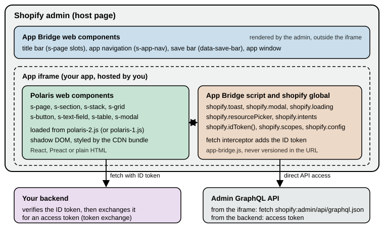

App UI: Polaris and App Bridge
|
This content was generated with the assistance of AI and should be verified against the official documentation before being relied on in production. |
This page covers the user interface of an embedded Shopify app: the pages that merchants see inside the Shopify admin.
It was written against Polaris web components 2.0 (stable on the Shopify CDN since 2026-10-22, @shopify/polaris-types
2.0.0), the 1.1 line that polaris-1.js still serves, the CDN-hosted App Bridge script (app-bridge.js, never
versioned in its URL) with @shopify/app-bridge-react 4.2.14 and @shopify/app-bridge-types 0.7.3, and the React Router
app template package @shopify/shopify-app-react-router 4.0.0, for Admin API version 2026-10. Every fact was checked on
2026-10-27. App UI is not tied to a Shopify plan: it works the same on every plan, and the merchant-facing admin
appearance that Polaris 2.0 targets is rolling out progressively to all stores.
The page sits after Apps Overview and Scaffolding, which
creates the project, and before Authentication and Access
Scopes, which explains what happens to the ID token that App Bridge attaches to requests. It answers four questions:
which libraries draw an app’s pages, how an app loads them and which version it gets, how to call the admin from inside
the app, and how to leave the deprecated @shopify/polaris React package behind. The running example is the Pocket
Coffee app, whose "Roast dates" page lets staff edit the roast date shown on each single-origin bean variant.
Where app UI lives
A Shopify app can put interface in several places, and since Polaris was rebuilt on web components in 2025 almost all of
them use the same element vocabulary (s-* elements). The places differ in who hosts the code and which subset of
components and APIs they get.
| Surface | What it is | UI library |
|---|---|---|
App Home, iframe model |
The app’s main page in the admin. A web app that you host and Shopify embeds in an iframe. Recommended for most apps and required for public apps and for anything with server-side logic. |
Any web framework, Polaris web components, App Bridge APIs and App Bridge web components. |
App Home, UI extension model |
The main page built as a Preact UI extension that targets |
Preact and Polaris web components only; a focused set of target APIs; compiled bundle limited to 64 KB. |
Admin UI extensions |
Actions and blocks that appear on product, order and customer pages of the admin. |
Preact and a per-surface subset of Polaris web components. |
Checkout and customer account UI extensions |
Code that runs at defined points of checkout and in customer accounts. |
Preact and a per-surface subset of Polaris web components. |
POS UI extensions |
Tiles, modals and blocks inside the Point of Sale app. |
Preact and a per-surface subset of Polaris web components (31 components when they went stable in 2025). |
This page concentrates on the first row, the iframe model, because it is the one that needs a script-loading decision and App Bridge. The other surfaces load nothing themselves: Shopify renders the Polaris components for them, so they follow whichever appearance the host provides and have no CDN URL to choose. The Flow, POS and Admin Extensions and Checkout Extensibility pages cover those surfaces.
Source: Apps in App Home
The layers of an iframe app
Three things cooperate inside an embedded page. The admin itself draws the surrounding chrome. Your app draws its own
content in an iframe using Polaris web components. A small script, App Bridge, connects the two: it publishes the
shopify global that the app calls, and it renders chrome elements (title bar, navigation, save bar) in the host page on
the app’s behalf.

The drawing separates the three libraries that the rest of the page treats one by one.
| Library | What it provides | How the app gets it | Versioned? |
|---|---|---|---|
Polaris web components |
The visual building blocks drawn inside the iframe: layout, forms, tables, overlays, feedback. |
A script tag for |
Yes, with semantic versioning since 2026-08-31. |
App Bridge APIs |
The |
The |
No. The URL has no version and always serves the latest. |
App Bridge web components |
Elements that control the admin outside the iframe: app navigation, title bar, save bar, app window. |
The same |
No. |
Source: App Home reference
Loading the scripts
An embedded page needs the App Bridge script and one Polaris script in its document head, plus a meta tag that tells App Bridge which app is loading. Apps scaffolded with Shopify CLI already have this wired; a hand-built page, or an app on another framework, adds it itself.
<head>
<meta name="shopify-api-key" content="%SHOPIFY_API_KEY%" />
<script src="https://cdn.shopify.com/shopifycloud/app-bridge.js"></script>
<script src="https://cdn.shopify.com/shopifycloud/polaris-2.js"></script>
</head>Source: Versioning for web components
The rules that go with this snippet:
-
Exactly one Polaris bundle. A page that loads two Polaris scripts throws an error. The usual causes are a stale tag left in a shared layout, a bundler alias, or adding your own tag next to the one that the template’s
AppProvideralready renders. -
App Bridge first. Put
app-bridge.jsbefore the Polaris script, so that App Bridge can publish the signal about the admin’s appearance before Polaris initialises. The Polaris 2.0 upgrade guide states this order explicitly. -
The meta tag carries the client ID.
shopify-api-keyholds the app’s client ID (the API key shown in the Dev Dashboard). The placeholder%SHOPIFY_API_KEY%is replaced by your server when it renders the page. App Bridge cannot authenticate anything without it. -
Content Security Policy. If the app sets a CSP,
script-srcmust allowhttps://cdn.shopify.comon every response that serves the embedded HTML shell. The admin also needs permission to frame your app; the template sets aframe-ancestorsdirective for the shop and the admin domains on document responses. -
TypeScript types. Install
@shopify/polaris-types(types for thes-*elements) and@shopify/app-bridge-types(types for theshopifyglobal) as development dependencies and list both incompilerOptions.types. The Polaris types major version follows the CDN major version, so 2.0 needs@shopify/polaris-types@^2.0.0.
{
"compilerOptions": {
"types": ["@shopify/polaris-types", "@shopify/app-bridge-types"]
}
}What the React Router template does
The default template (shopify app init with the React Router template, see
Apps Overview and Scaffolding) never shows a script tag in
its own source. The package @shopify/shopify-app-react-router renders them. Reading the package source of the version
installed by the public template at commit 48b841a (2026-10-09, package 3.0.2; the registry now has 4.0.0) shows
exactly what it does:
-
The
AppProvidercomponent renders the App Bridge script with the client ID as a data attribute, a Polaris script tag whose URL comes from itspolarisUrlprop, and then its children. WhenpolarisUrlis omitted the URL defaults to the unversionedhttps://cdn.shopify.com/shopifycloud/polaris.js, which tracks the 1.x line and never serves 2.x. -
AppProvideralso listens for theshopify:navigateevent that App Bridge fires when the merchant clicks an app navigation link, and calls React Router’snavigatewith the link’shref. This is hows-app-navlinks change routes without a full page reload. -
The server helper
addDocumentResponseHeaderssets aLinkheader that preconnects to the CDN and preloads the App Bridge and Polaris scripts (using thepolarisUrlof theshopifyAppconfiguration), and aContent-Security-Policy: frame-ancestorsheader naming the shop and the admin domains (or'none'for an app that is not embedded).
The template’s parent route shows the result. The route app/routes/app.tsx authenticates the request in its loader,
passes the client ID to the browser and wraps all child routes:
import { Outlet, useLoaderData } from "react-router";
import { AppProvider } from "@shopify/shopify-app-react-router/react";
import { authenticate } from "../shopify.server";
export const loader = async ({ request }) => {
await authenticate.admin(request);
return { apiKey: process.env.SHOPIFY_API_KEY || "" };
};
export default function App() {
const { apiKey } = useLoaderData<typeof loader>();
return (
<AppProvider apiKey={apiKey}>
<s-app-nav>
<s-link href="/app">Home</s-link>
<s-link href="/app/additional">Additional page</s-link>
</s-app-nav>
<Outlet />
</AppProvider>
);
}The template’s tsconfig.json lists @shopify/polaris-types in types, so the s-* elements type-check in JSX. The
template’s package.json pins @shopify/polaris-types to 1.0.1 on that commit, which is one reason the next section
matters: a project created from it stays on Polaris 1 until someone changes it.
Polaris web components 1.x and 2.0
Polaris web components are Shopify’s design system as native custom elements. They are delivered from the CDN, not bundled with the app, so the visual refinements, accessibility fixes and new components reach merchants without a rebuild. Their history is short and dated:
| Date | Event |
|---|---|
2025-05-21 |
"Polaris: unified and for the web" announced; unified web components in early access for the admin, checkout and customer accounts. Until then embedded apps were built with the React library. |
2025-10-01 |
Web components stable, together with API version 2025-10 for extensions; 14 new components for App Home since early access, including a new modal. |
2026-08-31 |
The Polaris CDN adopts semantic versioning. First 1.1 release candidate. Channel URLs such as |
2026-09-15 |
Progressive rollout of the redesigned Shopify admin (new frame, navigation and appearance) starts. |
2026-09-22 |
Polaris 1.1 stable: new |
2026-09-24 |
Polaris 2.0 release candidate ( |
2026-10-22 |
Polaris 2.0 stable, the first major release under semantic versioning. |
The CDN channels
Under semantic versioning a script URL names either a channel that moves forward within one major version, or a pinned release that never changes. The versioning reference lists the options. To confirm the table against the live CDN, each URL was fetched on 2026-10-27 and the response body hashed (the first 12 hex digits of SHA-256 are shown; equal hashes mean identical files).
| Script (under cdn.shopify.com/shopifycloud/) | Documented meaning | HTTP | Size (bytes) | SHA-256 prefix |
|---|---|---|---|---|
|
Newest stable 2.x release (currently 2.0). Moves with each 2.x release. |
200 |
919,721 |
af6e068300a7 |
|
Polaris 2.0, frozen as released. |
200 |
919,721 |
af6e068300a7 |
|
Release candidate for 2.0, updated in place during the candidate window. |
200 |
919,705 |
89dd2052b7b8 |
|
Newest stable 1.x release (currently 1.1). Moves with each 1.x release. |
200 |
739,944 |
912455ad0687 |
|
Polaris 1.1, frozen. |
200 |
739,944 |
912455ad0687 |
|
Polaris 1.0, frozen. |
200 |
504,626 |
2e432210f94c |
|
Legacy unversioned entry point. Follows the stable 1.x line and never serves 2.x. |
200 |
739,944 |
912455ad0687 |
|
Not published. |
404 |
2,770 |
(error page) |
The observed facts match the documentation: polaris.js, polaris-1.js and polaris-1.1.js are the same file today,
and so are polaris-2.js and polaris-2.0.js. The first pair will diverge when a 1.2 release ships, and the second
when 2.1 does. The 2.x bundle is about 24 percent larger than 1.1, which fits the fact, explained in the next section, that it
carries both appearances of the admin. The CDN responses allow cross-origin use (access-control-allow-origin: *) and are cached
for 60 seconds with a five-minute stale-while-revalidate window (cache-control: max-age=60, stale-while-revalidate=300),
so a channel update reaches merchants within minutes, not hours. That is the reason to pin a release when you need
control over exactly when a change appears.
Source: Versioning for web components
What changes in 2.0
The 2.0 release is about appearance, not about the component API.
-
Two appearances in one bundle. The Shopify admin is being redesigned with a new frame, new navigation and a new visual style. During the rollout some merchants see the new admin and others the current one. The 2.0 bundle carries the styling for both and selects between them at runtime: the admin signals through App Bridge which appearance is active, and the Polaris elements match it as they initialise. There is no API to call, no flag and no per-theme URL. The versioning reference refers to the redesigned appearance as "Admin Next".
-
Polaris 1 never changes appearance. An app that loads
polaris-1.jsorpolaris.jskeeps the current look even inside a redesigned admin, because Polaris 1 does not contain the new styling at all. Any part of the UI that still renders@shopify/polarisReact components also keeps the current look. -
Outside the admin the new style is the default. Components rendered outside the Shopify admin (for example in a local test page) use the new visual style, which gives a way to preview it without a store that has the redesign.
-
Adoption is explicit. Shopify does not move
polaris.jsorpolaris-1.jsto 2.x. An app opts in by editing the script URL. Security fixes may still be applied to older majors. -
Built for Shopify deadline. Apps in the Built for Shopify programme have until 2027-05-01 to update their embedded App Home interface to match the admin’s visual style. Using 2.0 (or its release candidate earlier) is the way to do it.
-
Extensions need nothing. Admin UI extensions and App Home UI extensions follow the admin design that each merchant has automatically, with no code change and no CDN URL.
To see how much of the component API moved, the published type packages were installed and compared on 2026-10-27. The
tag list is identical between @shopify/polaris-types 1.1.0 and 2.0.0 (62 tag declarations in the type file, the same
set), the only changed property in the machine-readable custom-elements manifest is a new loading property on
s-thumbnail, and the type file lists 564 icon names in 1.1.0 and 605 in 2.0.0, with no icon removed (the new names are
mostly -filled variants such as cart-down-filled and markets-euro-filled). Going from 1.0.1 to 1.1.0 added five
tags (s-empty-state, s-number, s-press-button, s-progress, s-scroll-box) and ten icons. In other words, an app
that already renders only Polaris web components does not have to change its markup to adopt 2.0; it has to load the
new script, update the types and check the parts of its UI that Polaris does not control.
Moving an app to Polaris 2.0
The upgrade guide has three steps.
Step 1: load the new version. How depends on how the app loads Polaris today. An app with its own script tag changes the
URL, as in the head snippet above. An app built from the React Router template sets polarisUrl in two places and keeps
the two values identical:
// app/routes/app.tsx
<AppProvider
apiKey={apiKey}
polarisUrl="https://cdn.shopify.com/shopifycloud/polaris-2.js"
>
<Outlet />
</AppProvider>// app/shopify.server.ts
const shopify = shopifyApp({
// ...
polarisUrl: 'https://cdn.shopify.com/shopifycloud/polaris-2.js',
});Source: Update your app for Polaris 2
Both options need @shopify/shopify-app-react-router 2.1.0 or later and both are optional. If the values differ, the
browser preloads one bundle (from the Link header) while the page runs another, which wastes bandwidth and can hide
which version is really live. Do not add a Polaris script tag of your own next to AppProvider: that loads a second
bundle and fails. Then install @shopify/polaris-types@^2.0.0 so the types describe the components that the app renders.
To stay on exactly 2.0 when later 2.x releases ship, load polaris-2.0.js and install @shopify/polaris-types@~2.0.0.
Step 2: audit what Polaris does not control. Polaris elements restyle themselves; anything else keeps its old look. The guide asks for these checks:
-
Load exactly one Polaris bundle, after App Bridge, on the version you intend. If
AppProvideris used,polarisUrlmust still match the server configuration. -
Replace remaining Polaris React components. A page that mixes them with web components renders different components with different styles once 2.0 is loaded.
-
Find CSS that reads Polaris custom properties or hardcodes values copied from
@shopify/polaris-tokens. Those rules stay on the old palette. Replace copied values with your own tokens, or replace the custom component with a Polaris one. -
Check fonts. The redesigned admin uses a face called ShopifyInter. Code that hardcodes Inter, or sets its own font stack on top of Polaris, keeps the old type. Polaris 2.0 loads the right faces for the active appearance, so font loading that only exists to support Polaris can go. (The public template’s
root.tsxstill links a stylesheet for Inter on that commit.) -
Compare hand-built cards, badges, banners and empty states against the restyled Polaris ones.
-
Position fixed-bottom elements above host UI. The redesigned admin floats UI over the bottom of the viewport, such as the Sidekick bar on desktop or navigation controls on mobile web. App Bridge reports the height of that overlay in the CSS custom property
--shopify-safe-area-inset-bottom(default0px) and already pads the body, so only apps that draw their own sticky footers or floating buttons needvar(--shopify-safe-area-inset-bottom, 0px). -
Walk the main flows, including empty and error states.
Step 3: test both appearances. During the rollout a 2.0 app must be correct in the old and the new admin. The old one
is any dev store without the redesign. The new one is a dev store created with the "Shopify admin’s new design" feature
preview; with the CLI that is shopify store create dev with the --feature-preview new_admin_design flag. Nothing in
the app changes between the two: the same bundle follows whichever admin surrounds it.
Source: Update your app for Polaris 2
Which channel to choose
For a production app the documented advice is the stable channel of the major you have tested (polaris-2.js), which
gets bug fixes, accessibility work and new components without an edit. Pin an exact release (polaris-2.0.js) only when
a release process needs to control the moment a visual change lands, and then schedule the bump, because pinned releases
receive no normal fixes. Use the release-candidate URLs only on development and staging. A project created from the
template today is on Polaris 1 until polarisUrl is set; given the 2027-05-01 Built for Shopify date, a new app that
intends to qualify should set it on day one.
Writing pages with Polaris web components
A Polaris web component is a custom element whose tag starts with s-. It behaves like a native element: attributes
and properties configure it, children and named slots fill it, and standard DOM events come out of it. It works in
React, Preact, Vue or plain HTML. The App Home component reference groups its components into seven categories
(the 2.0 type package declares 62 tags, which includes sub-elements such as s-option and s-table-row, and two
tags, s-press-button and s-scroll-box, that the App Home reference does not list):
| Category | Components |
|---|---|
Actions |
|
Feedback and status indicators |
|
Forms |
|
Layout and structure |
|
Media and visuals |
|
Overlays |
|
Typography and content |
|
There is deliberately no s-card: a standard grouped area is an s-section, and richer cards are patterns.
Page structure
s-page is the outer wrapper of a page. In an embedded app it also coordinates its heading, breadcrumb and actions with
the admin’s title bar, so the merchant sees one coherent header. It has a heading and an inlineSize property
(small, base or large) and fills named slots:
| Slot | Use |
|---|---|
|
The single main call to action. Must be one |
|
More buttons, or a trigger button whose |
|
One |
|
Content in a side column (use an |
|
Content placed before the main content, added in 1.1. |
The Polaris page has no slot for status next to the heading, so there is no equivalent of the old Polaris React
titleMetadata; a status that matters goes into the page content, for example an s-badge inside a section.
Inside the page, s-section groups content with an optional heading, s-stack lays children out in a row or column
(direction="inline" or "block", with a gap), s-grid builds columns, and s-box is the escape hatch with padding,
border and background properties. Component properties use camelCase in JSX and in the DOM (accessibilityLabel,
commandFor, gridTemplateColumns), while slot names are kebab-case (slot="primary-action"). Links and buttons use
href, not the old React url.
Events, commands and forms
Polaris components emit ordinary DOM events, so frameworks bind them the usual way (onClick, onInput, onChange in
React and Preact; addEventListener or lowercase attributes in plain HTML).
-
inputfires on every keystroke and suits live validation or counters.changefires when the value is committed: on blur or Enter for text fields, immediately for checkboxes and radio-style choices, and after each step for numeric controls. Read the value fromevent.currentTarget.value, and checkbox or switch state fromevent.currentTarget.checked. -
Commands connect a control to an overlay without JavaScript. Give the target an
id, and give the buttoncommandFor="<id>"plus acommand:--show,--hide,--toggle,--auto(the default, the most appropriate action for the target) or--copy(copy a clipboard item). Modals and popovers do not need a controlledopenstate; for imperative control, callshowOverlay(),hideOverlay()ortoggleOverlay()on ans-modalthrough a ref, or useshopify.modal.show(id)from App Bridge. -
Since 1.1 the overlay events
show,hide,aftershow,afterhideandaftertoggleno longer bubble. Listen on the overlay element itself or use itson*properties. -
Accessibility is built in (semantic markup, keyboard support, focus management, ARIA), and elements log a console warning when a required accessibility property is missing. Always set
labelanderroron form fields, uselabelAccessibilityVisibilityto hide a label visually but keep it for assistive technology, and setaccessibilityRolewhere the default role is wrong. -
Forms are native
formelements. Give every field aname. For unsaved-change handling, adddata-save-barto the form (see App Bridge below). -
When React renders controlled Polaris fields, use React 19. React 18 does not provide the property and event handling for custom elements that controlled fields rely on. The React reference covers React 19, and Forms and Actions explains controlled inputs and form actions.
Source: Using web components
Example: the Pocket Coffee "Roast dates" page
The page below edits the roast date of two Pocket Coffee single-origin variants. It uses a page with a breadcrumb, a
section with a status badge, a form with the automatic save bar, date fields, a primary button, App Bridge’s loading indicator and
toast, and an authenticated fetch to the app’s own backend. The backend route and its token verification belong to
Authentication and Access Scopes; here only the browser
side is shown.
import {useState} from 'react';
type Roast = {sku: string; origin: string; roastDate: string};
const initial: Roast[] = [
{sku: 'PC-ETH-WHL-250', origin: 'Ethiopia Yirgacheffe', roastDate: '2026-10-20'},
{sku: 'PC-COL-ESP-1K', origin: 'Colombia Huila', roastDate: '2026-10-22'},
];
export default function RoastDates() {
const [rows, setRows] = useState(initial);
const [saving, setSaving] = useState(false);
async function save(event: React.FormEvent<HTMLFormElement>) {
event.preventDefault();
setSaving(true);
shopify.loading(true);
// App Bridge adds the ID token to requests for the app's own origin.
const response = await fetch('/api/roast-dates', {
method: 'POST',
body: JSON.stringify(rows),
});
shopify.loading(false);
setSaving(false);
shopify.toast.show(response.ok ? 'Roast dates saved' : 'Could not save', {
isError: !response.ok,
});
}
return (
<s-page heading="Roast dates">
<s-link slot="breadcrumb-actions" href="/app">Home</s-link>
<s-section heading="Single-origin beans">
<s-badge tone="success">Live</s-badge>
<form data-save-bar data-discard-confirmation onSubmit={save}>
<s-stack gap="base">
{rows.map((row, i) => (
<s-date-field
key={row.sku}
label={`${row.origin} (${row.sku})`}
name={row.sku}
value={row.roastDate}
onChange={(e) => {
const value = e.currentTarget.value;
setRows(rows.map((r, j) => (j === i ? {...r, roastDate: value} : r)));
}}
/>
))}
<s-button type="submit" variant="primary" loading={saving}>Save</s-button>
</s-stack>
</form>
</s-section>
</s-page>
);
}The status badge sits inside the section because the page has no slot for it. This file was type-checked, not rendered. On 2026-10-27 it passed tsc 5.9.3 in strict mode with jsx: react-jsx,
@types/react 19.3.0, @shopify/polaris-types 2.0.0 and @shopify/app-bridge-types 0.7.3 (tsconfig types set to
react, @shopify/polaris-types, @shopify/app-bridge-types). The same project rejected a deliberately wrong file:
src/bad.tsx(4,17): error TS2322: Type '"happy"' is not assignable to type '"auto" | "neutral" | "critical" | undefined'.
src/bad.tsx(5,7): error TS2339: Property 's-card' does not exist on type 'JSX.IntrinsicElements'.
src/bad.tsx(6,48): error TS2322: ... Property 'colour' does not exist on type ... Did you mean 'color'?The three errors show what the type package buys: an invented tone value, the non-existent s-card, and a misspelled
property all fail at build time. Rendering the page needs a development store and shopify app dev, which require a
Shopify login and were not run for this documentation.
A page without a framework is the same markup with a script tag (the component tags are real elements, so no build step is needed):
<head>
<meta name="shopify-api-key" content="%SHOPIFY_API_KEY%" />
<script src="https://cdn.shopify.com/shopifycloud/app-bridge.js"></script>
<script src="https://cdn.shopify.com/shopifycloud/polaris-2.js"></script>
</head>
<body>
<s-page heading="Roast dates">
<s-button slot="primary-action" variant="primary" commandFor="help" command="--show">Help</s-button>
<s-section heading="Single-origin beans">
<s-paragraph>Roast dates appear as a badge on the product page.</s-paragraph>
</s-section>
<s-modal id="help" heading="Roast dates">
<s-paragraph>The date is stored as a product metafield.</s-paragraph>
<s-button slot="primary-action" variant="primary" commandFor="help" command="--hide">Done</s-button>
</s-modal>
</s-page>
</body>Source: Modal
Patterns
The App Home reference recommends starting from patterns, pre-built combinations of components and APIs that also help an app meet Built for Shopify design requirements. Templates are whole-page layouts: homepage, resource index, details and settings. Compositions are smaller assemblies to place inside a template: account connection, app card, callout card, footer help, index table, interstitial navigation, media card, metrics card, resource list and setup guide. The Pocket Coffee app would use the settings template for its roast-date defaults, the index table composition for a list of variants, and the setup guide for onboarding.
Source: App Home page patterns
Styling limits
Polaris elements use shadow DOM, so app CSS cannot reach inside them, cannot target internal classes, and cannot replace
their styles with .Polaris-* selectors from the old React library. App CSS can still style the native elements and
wrappers that the app renders itself (a scrolling region, a sticky footer, an ellipsis) and can size or position a
component host where ordinary layout rules apply. Use the documented component properties for the look of the component
and keep custom CSS scoped to app-owned elements around it.
App Bridge
App Bridge is the connection between the iframe and the admin. The CDN script defines a shopify object on the global
scope, and registers custom elements that draw admin chrome. Because the script is loaded from the CDN with no version in
the URL, it always serves the latest release, and the App Home reference states that App Bridge APIs and web components
are identical in every Polaris reference version. Built for Shopify has required the latest App Bridge (the
app-bridge.js script tag in the head of every document) since July 2025.
Configuration
Some shopify.config values are set by the host (shop, the permanent myshopify.com domain; host; locale, the
language of the admin user). Others are set with meta tags in the head:
| Setting | Meaning |
|---|---|
|
Client ID of the app. Required. |
|
Comma-separated feature names to switch off. Supported values: |
|
Allow-list of extra origins (format |
|
|
Source: Config API
The shopify global and its APIs
The documentation groups the APIs into three families.
| Family | API | What it does |
|---|---|---|
Authentication and data |
App API |
Information about the app (ID, settings, metadata). |
Config API |
Synchronous configuration values (shop, locale, API key, disabled features, allowed origins). |
|
Environment API |
Booleans |
|
ID Token API |
|
|
Scopes API |
|
|
User API |
Name, email and account access level of the logged-in staff member (different shape in POS). |
|
Resource Fetching API |
Authenticated |
|
User interface and interactions |
Intents API |
Launch native admin workflows (create or edit a product, collection, discount and others) and await the result. |
Navigation API |
Standard anchors and the History or Navigation APIs; |
|
Picker API |
Selection lists for app-specific data. |
|
Resource Picker API |
|
|
Loading API |
|
|
Modal API |
|
|
Save Bar API |
Programmatic save bar with |
|
Toast API |
|
|
Reviews API |
Request an app-review modal. |
|
Support API |
Register a handler for support requests. |
|
Tools API |
Register functions that the platform may invoke on the app’s behalf. |
|
Device and platform integration |
POS API |
Detect and use the POS environment. |
Print API |
Standard print dialog for documents and labels. |
|
Scanner API |
Cameras and barcode scanners. |
|
Share API |
Native share sheet on mobile. |
|
Web Vitals API |
Report performance metrics. |
Source: App Bridge APIs and web methods
ID tokens and authenticated fetch
Calls from the iframe to the app’s backend cannot rely on cookies (an embedded app has to work without third-party
cookies). App Bridge replaces them with a signed ID token. Older documentation calls it a session token; the current name
is ID token. When the app calls the global fetch() for a URL on its own origin or a subdomain, App Bridge’s fetch
interceptor adds the token in the Authorization header and the admin user’s locale in Accept-Language, so usually the
app never touches the token. Call shopify.idToken() only when a standard fetch is not involved, for example to
authenticate a WebSocket handshake.
// Authenticated request to the app backend (the interceptor adds Authorization).
const response = await fetch('/api/roast-dates');
const rows = await response.json();
// Token for something that is not fetch(), such as a WebSocket to your own backend.
const token = await shopify.idToken();
const socket = new WebSocket(`wss://pocket-coffee.example.com/ws?token=${token}`);Source: ID Token API and Resource Fetching API
Send the token only to your own backend. Verifying its signature needs the app’s client secret, so a third-party service cannot check it without a credential that would let it mint tokens your app accepts. The server side of the exchange (verifying the token, trading it for an access token) is the subject of Authentication and Access Scopes.
Direct API access to the Admin GraphQL API
An iframe app can query the Admin GraphQL API straight from the browser, without a backend route, using the URL scheme
shopify:admin/api/graphql.json with the standard fetch(). App Bridge routes the request through the host frame and
authenticates it. It must be enabled in shopify.app.toml:
[access_scopes]
scopes = "read_products,write_products"
[access.admin]
embedded_app_direct_api_access = true
direct_api_mode = "online"Source: App configuration
direct_api_mode is online (requests use the online access token of the logged-in staff member) or offline (requests
use the offline access token); embedded_app_direct_api_access is false when omitted. On 2026-10-27 Shopify CLI 5.0.0
accepted this file in shopify app build --no-input with the placeholder client ID 00000000000000000000000000000000
and rejected direct_api_mode = "sometimes" with "Invalid literal value". The requested scopes still decide what the
queries may read.
The Pocket Coffee page can then read the roast date metafield of every Ethiopia variant in the browser:
const response = await fetch('shopify:admin/api/graphql.json', {
method: 'POST',
body: JSON.stringify({
query: `#graphql
query PocketCoffeeRoastDates($first: Int!) {
productVariants(first: $first, query: "sku:PC-ETH-*") {
nodes {
id
sku
title
product {
id
title
metafield(namespace: "pocket_coffee", key: "roast_date") {
value
}
}
}
}
}`,
variables: {first: 20},
}),
});
const {data} = await response.json();Source: Resource Fetching API and App configuration
The query document was validated offline against the Admin GraphQL schema for 2026-10 (introspection result downloaded
anonymously, 3,708 types) with graphql 16.14.2: it is valid, while a copy with metafeild instead of metafield is
reported as Cannot query field "metafeild" on type "ProductVariant". Did you mean "metafield" or "metafields"?. It was
not sent to a store. To pin the API version, put it in the URL (shopify:admin/api/2026-10/graphql.json); without it the
default is used. Cost-based throttling, pagination and version rules are the subject of
Admin GraphQL API. Use direct access for reads and small mutations that
belong with the interface; keep long-running or secret-dependent work on the backend.
Feedback, pickers and workflows
-
Toast.
shopify.toast.show(message, {duration, action, onAction, onDismiss, isError})shows a short message at the top of the web admin (the bottom in the mobile app) and returns an ID. It hides itself afterdurationmilliseconds;shopify.toast.hide(id)closes it earlier. -
Loading.
shopify.loading(true)shows the loading bar in the admin header andshopify.loading(false)removes it. The bar stays until stopped, so call both around every asynchronous operation, including the error path. -
Modal. A Polaris
s-modalis the normal dialog.shopify.modal.show('id'),hideandtoggleopen and close it from script. App Bridge’ss-app-windowopens a route of the app in a full-screen overlay for large workflows. -
Resource picker.
await shopify.resourcePicker({type: 'product'})opens the admin’s own chooser and resolves to the selected resources (GraphQL IDs, titles, handles, and images and variants where relevant). Options includetype(product,variantorcollection),action(addorselect),multiple(boolean or a maximum number),filter(archived,draft,hidden,variants, a hiddenquery),queryandselectionIdsto preselect items. -
Intents.
await shopify.intents.invoke('create:shopify/Collection')launches the standard admin form for creating a collection and resolves with the outcome, which removes the need for a custom form. The string form isaction:type,value; the object form takesaction,type,valueanddata. -
Scopes.
shopify.scopes.query()returns the granted, required and optional scopes;request([...])opens the permission modal for optional scopes and resolves togranted-allordeclined-all;revoke([...])removes optional scopes. Required scopes cannot be revoked. -
Navigation. Plain anchors work: a relative
hrefstays in the app,target="_top"leaves the iframe, andshopify://admin/productsorshopify://admin/orders/456reaches admin pages.history.pushStateand the browser Navigation API change the top-level URL.
// Let staff pick which beans get a roast-date badge.
const selected = await shopify.resourcePicker({
type: 'product',
multiple: 5,
filter: {draft: false, archived: false},
});
// Open the native admin page for a product.
open('shopify://admin/products/123', '_top');
// Ask for an optional scope only when the feature needs it.
const result = await shopify.scopes.request(['write_metaobjects']);
if (result.result === 'declined-all') {
shopify.toast.show('Metaobject access was declined', {isError: true});
}Source: Resource Picker API, Scopes API and Navigation API
App Bridge web components
These elements render in the admin, outside the iframe, and need only the App Bridge script.
-
s-app-navdefines the app’s navigation: left sidebar on desktop, a dropdown from the title bar on mobile. Children ares-linkelements with relativehrefvalues and short noun labels. The app name in the sidebar already links to the app’s home route (default/), so no home link is needed. If the home page is mounted elsewhere, for example at/app, add<s-link href="/app" rel="home">Home</s-link>, which designates it as home and hides it from the rendered menu. Navigation cannot be nested: items are one level deep. -
Title bar.
s-pagewithheading, and theprimary-action,secondary-actionsandbreadcrumb-actionsslots, configures the admin’s native title bar. Use one primary action per page and group the rest in ans-menu. The App Bridge title-bar reference also shows anaccessoryslot holding ans-badge, but neither the Polaris page reference nor the migration guide lists it, so do not rely on it. In Remix apps, anchor tags are not supported in the title bar, so use Remix’s own link component there. -
Save bar. Adding
data-save-barto a nativeformmakes the admin show a save bar as soon as any field differs from its initial value, and hide it again on submit or reset.data-discard-confirmationasks for confirmation before a discard. The form’s ownonsubmitruns for Save (callevent.preventDefault()for custom async saving) andonresetfor Discard. Choose either the attribute or the programmaticshopify.saveBarAPI on a page, never both. A save bar for ans-app-windowmust come from a form inside the window: aui-save-baron the parent page belongs to the parent and appears behind the window. -
s-app-windowshows a route of the app (src) in a full-screen modal window for multi-step workflows. For ordinary dialogs, uses-modal, which decides by itself whether to render inside the app or as a full-screen overlay.
<s-app-nav>
<s-link href="/app" rel="home">Home</s-link>
<s-link href="/app/roast-dates">Roast dates</s-link>
<s-link href="/app/settings">Settings</s-link>
</s-app-nav>App Bridge for React
@shopify/app-bridge-react 4.2.14 (peer dependencies React and React DOM, any version) wraps the same features for
React. Its entry point exports the components Modal, NavMenu, TitleBar and SaveBar, the hook useAppBridge, and
re-exports the types of @shopify/app-bridge-types. The hook returns the shopify global, or a safe proxy during
server-side rendering where the global does not exist, which makes it the right way to call App Bridge from a component
that is also rendered on the server (as in React Router):
import {useAppBridge} from '@shopify/app-bridge-react';
export function RoastBadgeButton() {
const shopify = useAppBridge();
return (
<s-button onClick={() => shopify.toast.show('Roast date badge enabled')}>
Enable badge
</s-button>
);
}Source: useAppBridge
The current template does not need the React wrappers for navigation or the title bar; it uses s-app-nav and s-page
directly, and only imports useAppBridge for toasts and intents. The npm package @shopify/app-bridge 3.7.12 belongs
to the earlier generation (versions 3 and below, with createApp and action creators) and is not what current docs or
the template use; the CDN script is the supported entry point.
The deprecated Polaris React package
@shopify/polaris is the React component library that built every embedded app until 2025. Its last release is 13.9.5,
published on 2025-03-26. The npm package now carries a deprecation notice that says Polaris React is deprecated and no
longer maintained and points to the Polaris web components documentation; the old documentation is archived at
https://shopify.github.io/polaris-react-archive/. Shopify also removed outdated Polaris reference docs on
2026-04-01. For an app this means:
-
It still installs and runs, and it keeps its current appearance indefinitely, but it receives no fixes, no new components, and none of the Polaris 2.0 appearance. A page that uses React Polaris components next to web components renders the two in different styles.
-
New work should use web components. Public apps aiming at Built for Shopify have until 2027-05-01 to match the new admin style, which in practice requires Polaris 2.0 and the removal of React Polaris from embedded routes.
-
Polaris React and web components can coexist while migrating: the end state is an interface that is entirely web components, but
@shopify/polariscan stay for a route or dependency that still needs it.
Migration plan
Shopify publishes an incremental migration guide for iframe apps. Its sequence:
-
Requirements. An iframe-based App Home app; React 19 if web components render through React with controlled fields; the current App Bridge script with the
shopifyglobal available; an inventory of the@shopify/polarisversion, the test framework, the router and any routes that render outside the admin; third-party packages that render Polaris React internally (they block removal); and CSS that targets.Polaris-*classes or copies tokens. The mappings in the guide assume Polaris React 13.9.5, so upgrade older apps first. -
Add web components. Check the HTML for an existing Polaris script before adding one (the template already loads it), allow cdn.shopify.com in the CSP, install
@shopify/polaris-typesand@shopify/app-bridge-types, and render a smalls-badgein the embedded app. If it shows as unstyled text, look for a blocked or duplicate script before touching component code. -
Pick a slice. Migrate one page, route family or visually neutral shared component at a time, and keep each slice deployable. Within a page the recommended order is page shell (
Page,Card,Layout), display components (badge, banner, text, icon, stacks), buttons, links, menus, modals and popovers, form components with their validation, and finally tables, filters, selection and bulk actions as one data-view slice. -
Replace the app shell. The old
Frametree provided chrome and hostedToast,LoadingandContextualSaveBar. App Bridge and the admin now own those. -
Update tests, remove the package, verify.
| Polaris React integration | Replacement |
|---|---|
|
|
|
Remove. |
|
|
|
|
|
|
|
Remove once the last Polaris React consumer is gone; Polaris overlays handle their own backdrop, scroll lock and focus. |
The guide gives a one-to-one or pattern replacement for about a hundred components; a representative selection:
| Polaris React | Polaris web components |
|---|---|
|
|
|
|
|
|
|
|
|
|
|
|
|
|
|
|
|
|
|
|
|
|
|
Index table and resource list compositions, resource index template |
|
|
|
|
|
|
|
|
|
No direct equivalent: keep the React component during migration, use a native element ( |
|
|
A few translation habits cover most call sites. Replace url with href. Use camelCase properties and kebab-case slot
names. Read values from event.currentTarget.value (or checked). Connect buttons to overlays with commandFor and
command. Replace imported React icons with the documented string name on s-icon or an icon property, checking the
icon reference instead of guessing names. Do not rewrite a whole app in one change: migrate one slice, review the diff and
test it in a development store before starting the next. Shopify’s AI Toolkit (and the Dev MCP server) can give a coding
agent the current Polaris, App Bridge and pattern documentation for this work, but the guide’s advice stands: one route
or self-contained feature at a time.
Updating tests
Unit-test environments such as jsdom do not load the CDN script, so s-* elements stay as un-upgraded custom-element
hosts without a shadow DOM. This was confirmed on 2026-10-27 with jsdom 26.1.0: after parsing
<s-button variant="primary">Save</s-button>, customElements.get('s-button') is undefined, shadowRoot is null, the
variant attribute and the text are readable, and the element’s constructor is plain HTMLElement. Tests should
therefore query the rendered custom-element tag and its attributes or properties, not roles or text that only exist in
the shadow DOM; dispatch real DOM events instead of calling a React prop; mock window.shopify methods used by the
slice; stub showOverlay, hideOverlay and toggleOverlay when a test controls an s-modal; and provide complete
ResizeObserver and matchMedia mocks if the environment needs them. For UI extensions on API version 2026-04 and later
Shopify ships @shopify/ui-extensions-tester (version 2026.10.0 on npm), which renders an extension in a standard DOM
against typed mocks of the shopify global without a running host.
Removing the package for good
After the last slice and all dependent packages are migrated: delete imports of @shopify/polaris and
@shopify/polaris-icons; remove AppProvider, Frame, PolarisTestProvider and the Polaris React stylesheet; remove
packages that only supported it; delete .Polaris-* selectors and token overrides; remove the dependency and reinstall;
and add a lint rule so it does not return. If a public, authentication or standalone route outside the admin still needs
Polaris React, keep the dependency and scope the restriction to the embedded routes. An ESLint rule does that:
// eslint.config.mjs
export default [
{
files: ['app/**/*.{js,jsx,mjs}'],
languageOptions: {ecmaVersion: 2022, sourceType: 'module', parserOptions: {ecmaFeatures: {jsx: true}}},
rules: {
'no-restricted-imports': ['error', {
patterns: [{
group: ['@shopify/polaris', '@shopify/polaris/*', '@shopify/polaris-icons'],
message: 'Use Polaris web components (s-* elements) in embedded routes.',
}],
}],
},
},
];Run with ESLint 9.39.5 on 2026-10-27 against a file importing Card and Page from @shopify/polaris and an icon from
@shopify/polaris-icons, it reported two no-restricted-imports errors with the message above and exit code 1, and a
file without those imports passed. For TypeScript projects the same rule goes in the @typescript-eslint configuration
with the same options. Finish with a search of the tree for @shopify/polaris, @shopify/polaris-icons and .Polaris-.
App Home as a UI extension
For a custom-distribution app that needs no backend, the App Home page can itself be an extension. shopify app init
with the extension-only option scaffolds an extensions/app-home/ folder whose configuration targets
admin.app.home.render:
api_version = "2026-07"
[[extensions]]
name = "t:name"
handle = "app-home"
type = "ui_extension"
[[extensions.targeting]]
module = "./src/AppHome.jsx"
target = "admin.app.home.render"Source: Build an App Home UI extension and Shopify AI Toolkit for upgrading extensions to Polaris web components
The module renders with Preact (render(<App />, document.body) in the default export) and may use client-side routing
with preact-iso. It uses Polaris web components, shopify.query() for the Admin GraphQL API, pickers, intents,
standard navigation and fetch(). Limits: custom distribution only, Preact only, a subset of browser APIs and a
64 KB bundle. The migration is one-directional: an extension can be reauthored as an iframe app if it outgrows
the runtime, but not the reverse. Because the extension follows the admin design automatically, Polaris channel
decisions do not apply to it. The same runtime rules apply to the other UI extension surfaces: the CLI refuses to deploy
an extension on an API version older than 12 months, reference documentation is kept for the last four stable versions,
and since 2026-10-01 apps whose extensions are on API version 2025-07 or earlier cannot be updated. All API versions from
2025-10 use Polaris web components by default.
Common pitfalls
| Symptom | Cause and fix |
|---|---|
Console error about Polaris loading twice |
Two Polaris scripts on the page: a stale tag, a layout, or your own tag next to |
App stays on the old look after the upgrade |
|
Browser downloads a Polaris file that never runs |
|
|
The Polaris script is blocked (CSP |
Types complain about a component or property that exists at runtime |
|
Controlled fields lose values or events |
React 18 with Polaris web components. Use React 19, or uncontrolled fields. |
CSS overrides have no effect |
Shadow DOM. Use documented properties; scope custom CSS to your own elements. |
Part of the page looks old after 2.0 |
It is still Polaris React, custom CSS built on token values, hardcoded Inter, or a hand-built card. |
Floating button hidden behind the Sidekick bar |
Position it with |
Save bar behind a window, or two save bars |
|
|
Interception applies to the app’s origin and |
Overlay listeners stop firing |
Since 1.1 the overlay events do not bubble. Attach them to the overlay element. |
Modal action buttons do nothing |
|
Unit tests find no roles inside components |
jsdom does not run the CDN script, so there is no shadow DOM. Test tags, attributes and events. |
Anchors break in the title bar of a Remix app |
Use Remix’s link component, not |
A page needs Polaris 1.0 pin but uses |
That component arrived in 1.1. Move to |
What was run and what was not
These parts were executed on 2026-10-27 in a scratch project with no Shopify account and no credentials: the type-check
of the Roast dates page and the negative file (TypeScript 5.9.3), the comparison of @shopify/polaris-types 1.0.1,
1.1.0 and 2.0.0, the requests to the CDN script URLs (status, size and hash) and its response headers, the offline
validation of shopify.app.toml with [access.admin] by Shopify CLI 5.0.0, the offline validation of the GraphQL
document against the 2026-10 Admin schema, the jsdom demonstration, and the ESLint rule. The package source of
@shopify/shopify-app-react-router 3.0.2 and the public template were read, not modified.
These parts need a Shopify login or a store and were documented but not executed: rendering any component in a real
admin (including how Polaris 2.0 looks in the old and new admin), shopify app dev, every call to the shopify global
(toast, loading, resource picker, intents, scopes, ID token, direct API access), the save bar, shopify store create dev
with the new-admin feature preview, and the App Home UI extension scaffold. Their behaviour is stated from Shopify’s
documentation as of the check date.